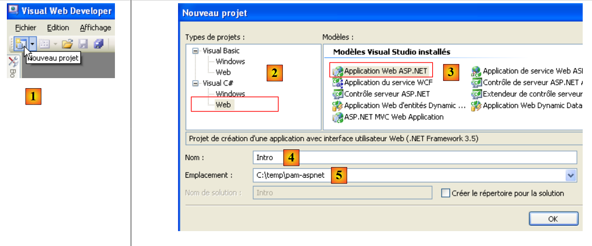
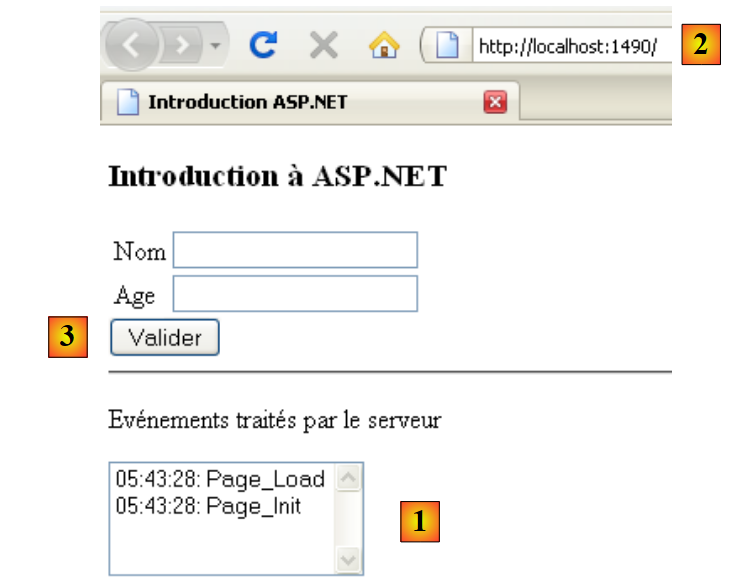
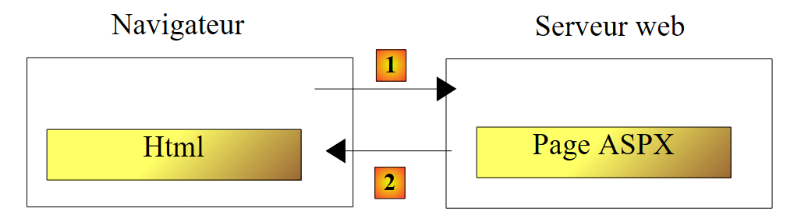
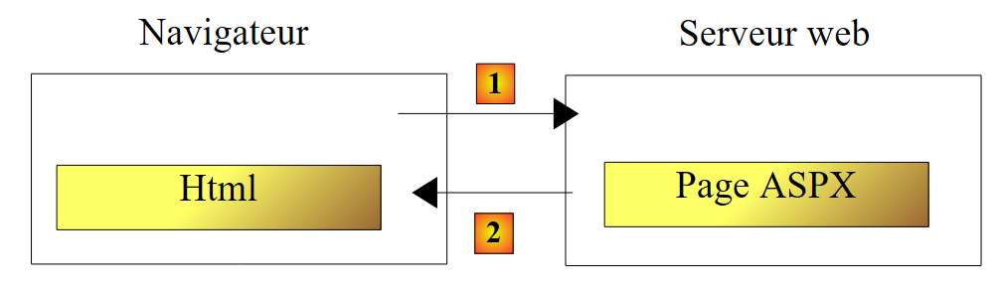
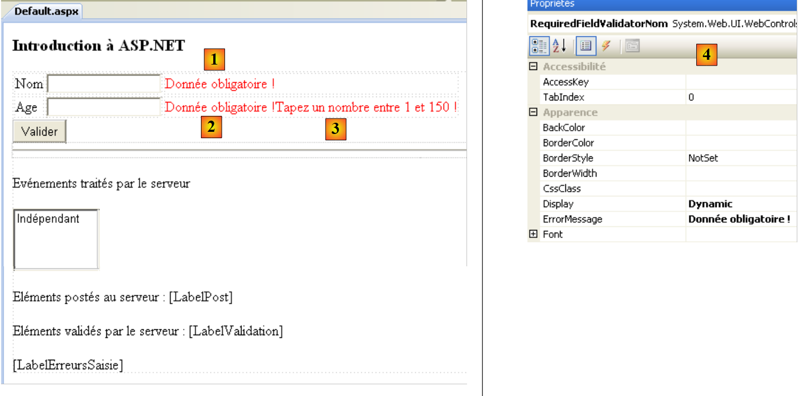
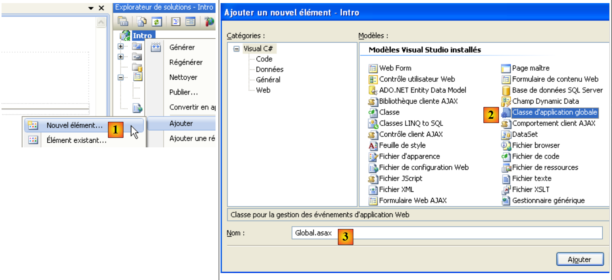
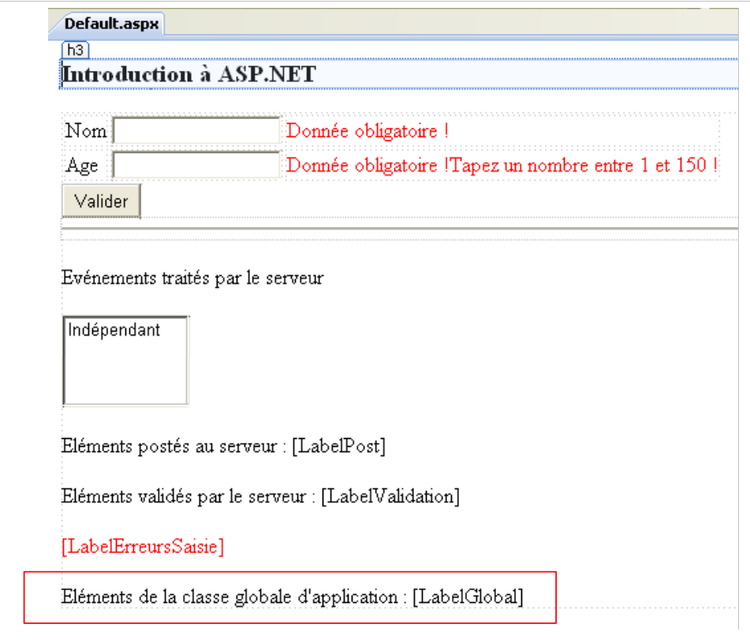
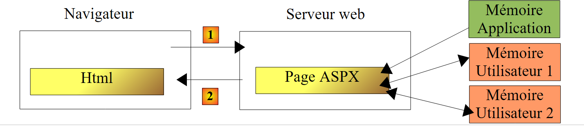
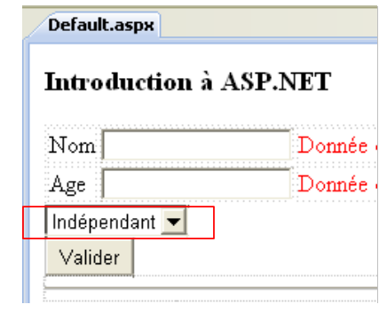
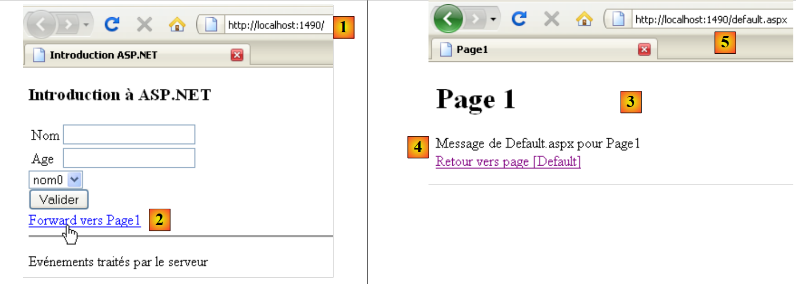

2. Een korte inleiding tot ASP.NET
We willen hier aan de hand van enkele voorbeelden de concepten van ASP.NET introduceren die verderop in dit document van pas zullen komen. Deze inleiding is niet bedoeld om de fijne kneepjes van de client-servercommunicatie van een webapplicatie te begrijpen. Hiervoor kunt u het volgende lezen:
- Programmeren met ASP.NET [Webontwikkeling met ASP.NET 1.1 (2004)]
Deze inleiding is bedoeld voor diegenen die snel aan de slag willen gaan en bereid zijn om in eerste instantie bepaalde punten die belangrijk kunnen zijn even buiten beschouwing te laten. In het verdere verloop van dit document worden deze punten verder uitgediept. Wie al bekend is met ASP.NET kan direct doorgaan naar paragraaf 3.
2.1. Een voorbeeldproject
2.1.1. Het project aanmaken
 |
- In [1] maken we een nieuw project aan met Visual Web Developer
- in [2], kies je een webproject in Visual C#
- in [3], geef je aan dat je een webapplicatie wilt maken in ASP.NET
- in [4], geef je de applicatie een naam. Er wordt een map voor het project aangemaakt met deze naam.
- in [5] geef je de bovenliggende map aan van de projectmap [4]
 |
- in [6] wordt het aangemaakte project
- [Default.aspx] is een standaard aangemaakte webpagina. Deze bevat HTML-tags en ASP.NET-tags
- [Default.aspx.cs] bevat de code voor het beheer van door de gebruiker veroorzaakte gebeurtenissen op de pagina [Defaul.aspx] die in zijn browser wordt weergegeven
- [Default.aspx.designer.cs] bevat de lijst met componenten ASP.NET van de pagina [Default.aspx]. Elke component ASP.NET die op de pagina [Default.aspx] wordt geplaatst, leidt tot de declaratie van die component in [Default.aspx.designer.cs].
- [Web.config] is het configuratiebestand van het project ASP.NET.
- [References] is de lijst met DLL-bestanden die door het webproject worden gebruikt. Deze DLL-bestanden zijn klassenbibliotheken die het project zal gebruiken. In [7] staat de lijst met DLL-bestanden die standaard in de projectreferenties zijn opgenomen. De meeste zijn overbodig. Als het project een DLL moet gebruiken die niet in [7] wordt vermeld, kan deze via [8] worden toegevoegd.
2.1.2. De pagina [Default.aspx]
Als het project wordt uitgevoerd via [Ctrl-F5], wordt de pagina [Default.aspx] in een browser weergegeven:
 |
- in [1], de URL van het webproject. Visual Web Developer heeft een ingebouwde webserver die wordt gestart wanneer je een project uitvoert. Deze luistert op een willekeurige poort, in dit geval 1490. De luisterpoort is gewoonlijk poort 80. In [1] wordt geen pagina opgevraagd. In dat geval wordt de pagina [Default.aspx] weergegeven, vandaar de naam ‘standaardpagina’.
- In [2] is de pagina [Default.aspx] leeg.
- in Visual Web Developer kan de pagina [Default.aspx] [3] visueel worden opgebouwd (tabblad [Design]) of met behulp van tags (tabblad [Source])
- in [4], de pagina [Defaul.aspx] in de modus [Design]. Deze wordt opgebouwd door er componenten in te plaatsen die te vinden zijn in de toolbox [5].
 |
De modus [Source] [6] geeft toegang tot de broncode van de pagina:
<%@ Page Language="C#" AutoEventWireup="true" CodeBehind="Default.aspx.cs" Inherits="Intro._Default" %>
<!DOCTYPE html PUBLIC "-//W3C//DTD XHTML 1.0 Transitional//EN" "http://www.w3.org/TR/xhtml1/DTD/xhtml1-transitional.dtd">
<html xmlns="http://www.w3.org/1999/xhtml">
<head runat="server">
<title></title>
</head>
<body>
<form id="form1" runat="server">
<div>
</div>
</form>
</body>
</html>
- regel 1 is een ASP.NET-richtlijn die bepaalde eigenschappen van de pagina weergeeft
- de richtlijn Page is van toepassing op een webpagina. Er zijn nog andere richtlijnen, zoals Application, WebService, ... die van toepassing zijn op andere objecten ASP.NET
- het attribuut CodeBehind geeft het bestand aan dat de gebeurtenissen van de pagina beheert
- het attribuut Language geeft de taal .NET aan die door het bestand CodeBehind wordt gebruikt
- het attribuut Inherits geeft de naam aan van de klasse die in het bestand CodeBehind is gedefinieerd
- Het attribuut AutoEventWireUp="true" geeft aan dat de koppeling tussen een gebeurtenis in [Default.aspx] en de bijbehorende handler in [Defaul.aspx.cs] plaatsvindt op basis van de naam van de gebeurtenis. Zo wordt degebeurtenis Load op de pagina [Default.aspx] verwerkt door de methode Page_Load van de klasse Intro._Default, die is gedefinieerd door het attribuut Inherits.
- De regels 4-14 beschrijven de pagina [Defaul.aspx] met behulp van tags:
- klassieke HTML-tags, zoals de tag <body> of <div>
- ASP.NET. Dit zijn de tags met het attribuut runat="server". De tags ASP.NET worden door de webserver verwerkt voordat de pagina naar de client wordt verzonden. Ze worden omgezet in HTML-tags. De browser van de klant ontvangt dus een standaard HTML-pagina waarin geen ASP.NET-tags meer voorkomen.
De pagina [Default.aspx] kan rechtstreeks vanuit de broncode worden gewijzigd. Dit is soms eenvoudiger dan via de modus [Design] te werken. We wijzigen de broncode als volgt:
<%@ Page Language="C#" AutoEventWireup="true" CodeBehind="Default.aspx.cs" Inherits="Intro._Default" %>
<!DOCTYPE html PUBLIC "-//W3C//DTD XHTML 1.0 Transitional//EN" "http://www.w3.org/TR/xhtml1/DTD/xhtml1-transitional.dtd">
<html xmlns="http://www.w3.org/1999/xhtml">
<head runat="server">
<title>Introduction ASP.NET</title>
</head>
<body>
<h3>Introduction à ASP.NET</h3>
<form id="form1" runat="server">
<div>
</div>
</form>
</body>
</html>
In regel 6 geven we de pagina een titel met de tag HTML <title>. In regel 9 voegen we tekst toe aan de hoofdtekst (<body>) van de pagina. Als we het project uitvoeren (Ctrl-F5), krijgen we het volgende resultaat in de browser:
 |
2.1.3. De bestanden [Default.aspx.designer.cs] en [Default.aspx.cs]
Het bestand [Default.aspx.designer.cs] definieert de componenten van de pagina [Defaul.aspx]:
//------------------------------------------------------------------------------
// <automatisch gegenereerd>
// Deze code is gegenereerd door een tool.
// Runtime-versie: 2.0.50727.3603
//
// Wijzigingen in dit bestand kunnen leiden tot onjuist gedrag en gaan verloren als
// de code opnieuw wordt gegenereerd.
// </auto-generated>
//------------------------------------------------------------------------------
namespace Intro {
public partial class _Default {
/// <summary>
/// Formulier 1.
/// </summary>
/// <remarks>
/// Automatisch gegenereerd veld.
/// Verplaats de velddefinitie van het ontwerpbestand naar het code-behind-bestand om het te wijzigen.
/// </opmerkingen>
protected global::System.Web.UI.HtmlControls.HtmlForm form1;
}
}
In dit bestand staat de lijst met ASP.NET-componenten van de pagina [Default.aspx] die een identificatiecode hebben. Deze komen overeen met de tags van [Default.aspx] met het attribuut runat="server" en het attribuut id. Zo komt de component in regel 23 hierboven overeen met de tag
<form id="form1" runat="server">
van [Default.aspx].
De ontwikkelaar heeft weinig te maken met het bestand [Default.aspx.designer.cs]. Toch is dit bestand nuttig om de klasse van een bepaalde component te achterhalen. Zo zien we hieronder dat de component form1 van het type HtmlForm is. De ontwikkelaar kan deze klasse vervolgens onderzoeken om de eigenschappen en methoden ervan te achterhalen. De componenten van de pagina [Default.aspx] worden gebruikt door de klasse van het bestand [Default.aspx.cs]:
using System;
using System.Collections.Generic;
using System.Linq;
using System.Web;
using System.Web.UI;
using System.Web.UI.WebControls;
namespace Intro
{
public partial class _Default : System.Web.UI.Page
{
protected void Page_Load(object sender, EventArgs e)
{
}
}
}
Merk op dat de klasse die in de bestanden [Default.aspx.cs] en [Default.aspx.designer.cs] is gedefinieerd, dezelfde is (regel 10): Intro._Default. Het is het sleutelwoord partial dat het mogelijk maakt om de declaratie van een klasse over meerdere bestanden uit te breiden, in dit geval twee.
In regel 10 hierboven zien we dat de klasse [_Default] de klasse [Page] uitbreidt en de gebeurtenissen ervan overneemt. Een daarvan is de gebeurtenis Load, die plaatsvindt wanneer de pagina door de webserver wordt geladen. Regel 12: de methode Page_Load die de gebeurtenis Load van de pagina afhandelt. Meestal wordt hier de pagina geïnitialiseerd voordat deze in de browser van de klant wordt weergegeven. In dit geval doet de methode Page_Load niets.
De klasse die aan een webpagina is gekoppeld, in dit geval de klasse Intro._Default, wordt aangemaakt aan het begin van het verzoek van de klant en vernietigd zodra het antwoord naar de klant is verzonden. Deze klasse kan dus niet worden gebruikt om informatie tussen twee verzoeken op te slaan. Hiervoor moet gebruik worden gemaakt van het concept van een gebruikerssessie.
2.2. De gebeurtenissen van een webpagina ASP.NET
We bouwen de volgende pagina [Default.aspx]:
<%@ Page Language="C#" AutoEventWireup="true" CodeBehind="Default.aspx.cs" Inherits="Intro._Default" %>
<!DOCTYPE html PUBLIC "-//W3C//DTD XHTML 1.0 Transitional//EN" "http://www.w3.org/TR/xhtml1/DTD/xhtml1-transitional.dtd">
<html xmlns="http://www.w3.org/1999/xhtml">
<head runat="server">
<title>Introduction ASP.NET</title>
</head>
<body>
<h3>Introduction à ASP.NET</h3>
<form id="form1" runat="server">
<div>
<table>
<tr>
<td>
Nom</td>
<td>
<asp:TextBox ID="TextBoxNom" runat="server"></asp:TextBox>
</td>
<td>
</td>
</tr>
<tr>
<td>
Age</td>
<td>
<asp:TextBox ID="TextBoxAge" runat="server"></asp:TextBox>
</td>
<td>
</td>
</tr>
</table>
</div>
<asp:Button ID="ButtonValider" runat="server" Text="Valider" />
<hr />
<p>
Evénements traités par le serveur</p>
<p>
<asp:ListBox ID="ListBoxEvts" runat="server"></asp:ListBox>
</p>
</form>
</body>
</html>
De modus [Design] van de pagina is als volgt:
 |
Het bestand [Default.aspx.designer.cs] is als volgt:
namespace Intro {
public partial class _Default {
protected global::System.Web.UI.HtmlControls.HtmlForm form1;
protected global::System.Web.UI.WebControls.TextBox TextBoxNom;
protected global::System.Web.UI.WebControls.TextBox TextBoxAge;
protected global::System.Web.UI.WebControls.Button ButtonValider;
protected global::System.Web.UI.WebControls.ListBox ListBoxEvts;
}
}
Hierin zijn alle componenten ASP.NET van de pagina [Default.aspx] met een identificatiecode opgenomen.
We passen het bestand [Default.aspx.cs] als volgt aan:
using System;
namespace Intro
{
public partial class _Default : System.Web.UI.Page
{
protected void Page_Init(object sender, EventArgs e)
{
// de gebeurtenis
ListBoxEvts.Items.Insert(0, string.Format("{0}: Page_Init", DateTime.Now.ToString("hh:mm:ss")));
}
protected void Page_Load(object sender, EventArgs e)
{
// de gebeurtenis wordt geregistreerd
ListBoxEvts.Items.Insert(0, string.Format("{0}: Page_Load", DateTime.Now.ToString("hh:mm:ss")));
}
protected void ButtonValider_Click(object sender, EventArgs e)
{
// de gebeurtenis wordt genoteerd
ListBoxEvts.Items.Insert(0, string.Format("{0}: ButtonValider_Click", DateTime.Now.ToString("hh:mm:ss")));
}
}
}
De klasse [_Default] (regel 5) verwerkt drie gebeurtenissen:
- de gebeurtenis Init (regel 7), die plaatsvindt wanneer de pagina is geïnitialiseerd
- de gebeurtenis Load (regel 13) die plaatsvindt wanneer de pagina door de webserver is geladen. De gebeurtenis Init vindt plaats vóór de gebeurtenis Load.
- de Click-gebeurtenis op de knop ButtonValider (regel 19), die plaatsvindt wanneer de gebruiker op de knop [Valider] klikt
De afhandeling van elk van deze drie gebeurtenissen bestaat uit het toevoegen van een bericht aan de component Listbox met de naam ListBoxEvts. Dit bericht geeft het tijdstip en de naam van de gebeurtenis weer. Elk bericht wordt bovenaan de lijst geplaatst. De berichten bovenaan de lijst zijn dus de meest recente.
Wanneer het project wordt uitgevoerd, verschijnt de volgende pagina:
 |
Uit [1] blijkt dat de gebeurtenissen Page_Init en Page_Load in deze volgorde hebben plaatsgevonden. Ter herinnering: de meest recente gebeurtenis staat bovenaan de lijst. Wanneer de browser de pagina [Default.aspx] rechtstreeks opvraagt via de URL [2], gebeurt dit via een commando HTTP (HyperText Transfer Protocol), ook wel GET genoemd. Zodra de pagina in de browser is geladen, zal de gebruiker gebeurtenissen op de pagina activeren. Hij klikt bijvoorbeeld op de knop [Valider] [3]. De gebeurtenissen die de gebruiker activeert zodra de pagina in de browser is geladen, leiden tot een verzoek aan de pagina [Default.aspx], maar ditmaal met een commando HTTP, genaamd POST. Samenvattend:
- het initieel laden van een pagina P in een browser gebeurt via een bewerking HTTP GET
- de gebeurtenissen die vervolgens op de pagina plaatsvinden, genereren telkens een nieuw verzoek naar dezelfde pagina P, maar ditmaal met de opdracht HTTP POST. Een pagina P kan vaststellen of deze is opgevraagd met een commando GET of een commando POST, waardoor ze zich indien nodig anders kan gedragen, wat meestal het geval is.
Eerste aanvraag van een pagina ASPX: GET
 |
- in [1] vraagt de browser de pagina ASPX aan via een commando HTTP GET zonder parameters.
- in [2] stuurt de webserver als antwoord de stream HTML, de vertaling van de opgevraagde pagina ASPX.
Verwerking van een gebeurtenis op de door de browser weergegeven pagina: POST
 |
- in [1], bij een gebeurtenis op de pagina HTML, vraagt de browser de pagina ASPX op, die al is opgehaald met een bewerking GET, ditmaal met een opdracht HTTP POST vergezeld van parameters. Deze parameters zijn de waarden van de componenten die zich binnen de tag <form> bevinden van de pagina HTML die door de browser wordt weergegeven. Deze waarden worden de door de client verzonden waarden genoemd. Ze worden door de pagina ASPX gebruikt om het verzoek van de client te verwerken.
- In [2] stuurt de webserver als antwoord de stream HTML, de vertaling van de pagina ASPX die aanvankelijk was aangevraagd door POST, of van een andere pagina indien er sprake was van een paginadoorverwijzing of -omleiding.
Laten we teruggaan naar onze voorbeeldpagina:
 |
- naar [2]; de pagina is verkregen via een GET.
- in [1] zien we de twee gebeurtenissen die plaatsvonden tijdens deze GET
Als de gebruiker hierboven op de knop [Valider] [3] klikt, wordt de pagina [Default.aspx] opgevraagd met een POST. Deze POST gaat vergezeld van parameters die de waarden zijn van alle componenten die zijn opgenomen in de tag <form> van de pagina [Default.aspx]: de twee TextBox en [TextBoxNom, TextBoxAge], de knop [ButtonValider], de lijst [ListBoxEvts]. De verzonden waarden voor de componenten zijn als volgt:
- TextBox: de ingevoerde waarde
- Button: de tekst van de knop, in dit geval de tekst „Bevestigen“
- Listbox: de tekst van het bericht dat is geselecteerd in ListBox
Als reactie op POST krijgen we de pagina [4]. Dit is opnieuw de pagina [Default.aspx]. Dit is het normale gedrag, tenzij er sprake is van een paginaoverdracht of omleiding door de gebeurtenisverwerkers van de pagina. We zien dat er twee nieuwe gebeurtenissen hebben plaatsgevonden:
- de gebeurtenis Page_Load, die plaatsvond tijdens het laden van de pagina
- de gebeurtenis ButtonValider_Click, die plaatsvond door het klikken op de knop [Valider]
We kunnen opmerken dat:
- de gebeurtenis Page_Init niet heeft plaatsgevonden bij de bewerking HTTP POST, terwijlhet wel plaatsvond bij de gebeurtenis HTTP GET
- de gebeurtenis Page_Load vindt altijd plaats, of het nu gaat om een GET of een POST. In deze methode moet men doorgaans weten of het om een GET of een POST gaat.
- Na afloop van de POST is de pagina [Default.aspx] met de door de gebeurtenishandlers aangebrachte wijzigingen teruggestuurd naar de client. Zo gaat het altijd. Zodra de gebeurtenissen van een pagina P zijn verwerkt, wordt diezelfde pagina P teruggestuurd naar de client. Er zijn twee manieren om aan deze regel te ontsnappen. De laatst uitgevoerde gebeurtenisverwerker kan
- de uitvoeringsstroom doorsturen naar een andere pagina P2.
- de browser van de klant omleiden naar een andere pagina P2.
In beide gevallen wordt de pagina P2 teruggestuurd naar de browser. De twee methoden vertonen verschillen waarop we later zullen terugkomen.
- De gebeurtenis ButtonValider_Click vond plaats na de gebeurtenis Page_Load. Het is dus deze handler die de beslissing kan nemen over de overdracht of omleiding naar een pagina P2.
- De lijst met gebeurtenissen [4] heeft de twee gebeurtenissen behouden die werden weergegeven tijdens het eerste laden (GET) van de pagina [Default.aspx]. Dit is verrassend, aangezien de pagina [Default.aspx] tijdens POST opnieuw is aangemaakt. We zouden de pagina [Default.aspx] met zijn ontwerpwaarden moeten aantreffen, met dus een lege ListBox. De uitvoering van de handlers Page_Load en ButtonValider_Click zou daar vervolgens twee berichten moeten plaatsen. Er zijn er echter vier te vinden. Dit wordt verklaard door het mechanisme van VIEWSTATE. Tijdens de eerste GET-bewerking verstuurt de webserver de pagina [Default.aspx] met een HTML-tag <input type="hidden" ...>, ook wel verborgen veld genoemd (regel 10 hieronder).
In het id-veld "__VIEWSTATE" zet de webserver de waarde van alle onderdelen van de pagina in gecodeerde vorm. Dit gebeurt zowel bij de eerste GET als bij de daaropvolgende POST. Wanneer er een POST op een pagina P voorkomt:
- vraagt de browser de pagina P op door in zijn verzoek de waarden van alle componenten te verzenden die zich binnen de tag <form> bevinden. Hierboven is te zien dat de component "__VIEWSTATE" zich binnen de tag <form> bevindt. De waarde ervan wordt dus bij een POST naar de server verzonden.
- pagina P wordt geïnstantieerd en geïnitialiseerd met haar constructiewaarden
- de component "__VIEWSTATE" wordt gebruikt om de componenten weer de waarden te geven die ze hadden toen pagina P eerder was verzonden. Zo krijgt bijvoorbeeld de lijst met gebeurtenissen [4] de eerste twee berichten terug die erin stonden toen deze werd verzonden als antwoord op de oorspronkelijke GET van de browser.
- De componenten van pagina P nemen vervolgens de waarden aan die door de browser zijn verzonden. Op dat moment bevindt het formulier op pagina P zich in de toestand waarin de gebruiker het heeft verzonden.
- De gebeurtenis Page_Load wordt verwerkt. Hier voegt het een bericht toe aan de lijst met gebeurtenissen [4].
- De gebeurtenis die POST heeft veroorzaakt, wordt verwerkt. Hier voegt ButtonValider_Click een bericht toe aan de lijst met gebeurtenissen [4].
- pagina P wordt teruggestuurd. De componenten hebben de volgende waarde:
- ofwel de verzonden waarde, c.a.d; ofwel de waarde die de component in het formulier had toen dit naar de server werd verzonden
- ofwel een waarde die door een van de gebeurtenishandlers is opgegeven.
In ons voorbeeld
- krijgen de twee componenten TextBox hun verzonden waarde terug, omdat de gebeurtenishandlers deze niet wijzigen
- de lijst met gebeurtenissen: [4] krijgt zijn verzonden waarde terug, c.a.d. alle gebeurtenissen die al in de lijst stonden, plus twee nieuwe gebeurtenissen die zijn aangemaakt door de methoden Page_Load en ButtonValider_Click.
Het mechanisme van VIEWSTATE kan op het niveau van elke component worden ingeschakeld of uitgeschakeld. Laten we het uitschakelen voor de component [ListBoxEvts]:
 |
- in [1] wordt de VIEWSTATE van de component [ListBoxEvts] uitgeschakeld. Die van de TextBox en [2] is standaard ingeschakeld.
- In [3] worden de twee gebeurtenissen die na de initiële GET worden teruggestuurd
 |
- in [4]: het formulier is ingevuld en er is op de knop [Valider] geklikt. Er wordt een POST naar de pagina [Default.aspx] uitgevoerd.
- in [6], het resultaat dat wordt weergegeven na een klik op de knop [Valider]
- het geactiveerde mechanisme van VIEWSTATE verklaart waarom de TextBox en [7] hun in [4] geplaatste waarde hebben behouden
- het uitgeschakelde mechanisme van de VIEWSTATE verklaart waarom de component [ListBoxEvts] [8] zijn inhoud [5] niet heeft behouden.
2.3. Beheer van verzonden waarden
We zullen hier kijken naar de waarden die door de twee TextBox worden verzonden wanneer de gebruiker op de knop [Valider] klikt. De pagina [Default.aspx] in de modus [Design] verandert als volgt:
 |
De broncode van het toegevoegde element in [1] is als volgt:
<p>
Eléments postés au serveur :
<asp:Label ID="LabelPost" runat="server"></asp:Label>
</p>
We gebruiken de component [LabelPost] om de waarden weer te geven die zijn ingevoerd in de twee TextBox en [2]. De code van de gebeurtenishandler [Default.aspx.cs] verandert als volgt:
using System;
namespace Intro
{
public partial class _Default : System.Web.UI.Page
{
protected void Page_Init(object sender, EventArgs e)
{
// noteer de gebeurtenis
ListBoxEvts.Items.Insert(0, string.Format("{0}: Page_Init", DateTime.Now.ToString("hh:mm:ss")));
}
protected void Page_Load(object sender, EventArgs e)
{
// de gebeurtenis wordt genoteerd
ListBoxEvts.Items.Insert(0, string.Format("{0}: Page_Load", DateTime.Now.ToString("hh:mm:ss")));
}
protected void ButtonValider_Click(object sender, EventArgs e)
{
// de gebeurtenis wordt genoteerd
ListBoxEvts.Items.Insert(0, string.Format("{0}: ButtonValider_Click", DateTime.Now.ToString("hh:mm:ss")));
// de naam en de leeftijd worden weergegeven
LabelPost.Text = string.Format("nom={0}, age={1}", TextBoxNom.Text.Trim(), TextBoxAge.Text.Trim());
}
}
}
Op regel 24 wordt de component LabelPost bijgewerkt:
- LabelPost is van het type [System.Web.UI.WebControls.Label] (zie Default.aspx.designer.cs). De eigenschap Text vertegenwoordigt de tekst die door de component wordt weergegeven.
- TextBoxNom en TextBoxAge zijn van het type [System.Web.UI.WebControls.TextBox]. De eigenschap Text van een component TextBox is de tekst die in het invoerveld wordt weergegeven.
- De methode Trim() verwijdert spaties die voor of na een tekenreeks kunnen staan
Zoals eerder uitgelegd, hebben de componenten van de pagina bij het uitvoeren van de methode ButtonValider_Click dezelfde waarde als toen de pagina door de gebruiker werd verzonden. De eigenschappen Text van beide TextBox hebben dus als waarde de teksten die de gebruiker in de browser heeft ingevoerd.
Hier volgt een voorbeeld:
 |
- in [1], de verzonden waarden
- in [2], het antwoord van de server.
- in [3] hebben de TextBox hun verzonden waarde teruggekregen via het geactiveerde mechanisme van VIEWSTATE
- in [4]: de berichten van de component ListBoxEvts zijn afkomstig van de methoden Page_Init, Page_Load, ButtonValider_Click en een geblokkeerde VIEWSTATE
- In [5] heeft de component LabelPost zijn waarde verkregen via de methode ButtonValider_Click. De twee door de gebruiker ingevoerde waarden zijn correct opgehaald uit de twee TextBox en [1].
Hierboven is te zien dat de verzonden waarde voor de leeftijd de tekenreeks "yy" is, een ongeldige waarde. We gaan aan de pagina componenten toevoegen die validators worden genoemd. Deze dienen om de geldigheid van verzonden gegevens te controleren. Deze geldigheid kan op twee plaatsen worden gecontroleerd:
- aan de clientzijde. Met een configuratieoptie van de validator kan worden ingesteld of de controles al dan niet in de browser moeten worden uitgevoerd. In dat geval worden ze uitgevoerd door JavaScript-code die in de pagina HTML is ingebed. Wanneer de gebruiker de in het formulier ingevoerde waarden verzendt, worden deze eerst gecontroleerd door de JavaScript-code. Als een van de controles mislukt, wordt de verzending niet uitgevoerd. Zo wordt een heen-en-terugverkeer met de server vermeden, waardoor de pagina sneller reageert.
- op de server. Terwijl controles aan de clientzijde optioneel kunnen zijn, zijn ze aan de serverzijde verplicht, ongeacht of er aan de clientzijde al dan niet een controle heeft plaatsgevonden. Wanneer een pagina namelijk verzonden waarden ontvangt, kan deze immers niet weten of deze al dan niet door de client zijn gecontroleerd voordat ze werden verzonden. Aan de serverzijde moet de ontwikkelaar daarom altijd de geldigheid van de verzonden gegevens controleren.
De pagina [Default.aspx] wordt als volgt aangepast:
<%@ Page Language="C#" AutoEventWireup="true" CodeBehind="Default.aspx.cs" Inherits="Intro._Default" %>
<!DOCTYPE html PUBLIC "-//W3C//DTD XHTML 1.0 Transitional//EN" "http://www.w3.org/TR/xhtml1/DTD/xhtml1-transitional.dtd">
<html xmlns="http://www.w3.org/1999/xhtml">
<head runat="server">
<title>Introduction ASP.NET</title>
</head>
<body>
<h3>Introduction à ASP.NET</h3>
<form id="form1" runat="server">
<div>
<table>
<tr>
<td>
Nom</td>
<td>
<asp:TextBox ID="TextBoxNom" runat="server"></asp:TextBox>
</td>
<td>
<asp:RequiredFieldValidator ID="RequiredFieldValidatorNom" runat="server"
ControlToValidate="TextBoxNom" Display="Dynamic"
ErrorMessage="Donnée obligatoire !"></asp:RequiredFieldValidator>
</td>
</tr>
<tr>
<td>
Age</td>
<td>
<asp:TextBox ID="TextBoxAge" runat="server"></asp:TextBox>
</td>
<td>
<asp:RequiredFieldValidator ID="RequiredFieldValidatorAge" runat="server"
ControlToValidate="TextBoxAge" Display="Dynamic"
ErrorMessage="Donnée obligatoire !"></asp:RequiredFieldValidator>
<asp:RangeValidator ID="RangeValidatorAge" runat="server"
ControlToValidate="TextBoxAge" Display="Dynamic"
ErrorMessage="Tapez un nombre entre 1 et 150 !" MaximumValue="150"
MinimumValue="1" Type="Integer"></asp:RangeValidator>
</td>
</tr>
</table>
</div>
<asp:Button ID="ButtonValider" runat="server" onclick="ButtonValider_Click"
Text="Valider" CausesValidation="False"/>
<hr />
<p>
Evénements traités par le serveur</p>
<p>
<asp:ListBox ID="ListBoxEvts" runat="server" EnableViewState="False">
</asp:ListBox>
</p>
<p>
Eléments postés au serveur :
<asp:Label ID="LabelPost" runat="server"></asp:Label>
</p>
<p>
Eléments validés par le serveur :
<asp:Label ID="LabelValidation" runat="server"></asp:Label>
</p>
<asp:Label ID="LabelErreursSaisie" runat="server" ForeColor="Red"></asp:Label>
</form>
</body>
</html>
De validatoren zijn toegevoegd aan de regels 20, 32 en 35. Op regel 58 wordt een component Label gebruikt om de geldige verzonden waarden weer te geven. Op regel 60 wordt een component Label gebruikt om een foutmelding weer te geven als er invoerfouten zijn.
De pagina [Default.aspx] in de modus [Design] ziet er als volgt uit:
 |
- De componenten [1] en [2] zijn van het type RequiredFieldValidator. Deze validator controleert of een invoerveld niet leeg is.
- De component [3] is van het type RangeValidator. Deze validator controleert of een invoerveld een waarde bevat die tussen twee grenzen ligt.
- In [4] zijn de eigenschappen van de validator [1].
We zullen de twee soorten validatoren toelichten aan de hand van hun tags in de code van de pagina [Default.aspx]:
<asp:RequiredFieldValidator ID="RequiredFieldValidatorNom" runat="server"
ControlToValidate="TextBoxNom" Display="Dynamic"
ErrorMessage="Donnée obligatoire !"></asp:RequiredFieldValidator>
- ID: de ID van de component
- ControlToValidate: de naam van de component waarvan de waarde wordt gecontroleerd. Hier willen we dat de component TextBoxNom geen lege waarde heeft (lege tekenreeks of een reeks spaties)
- ErrorMessage: foutmelding die in de validator moet worden weergegeven bij ongeldige gegevens.
- EnableClientScript: booleaanse waarde die aangeeft of de validator ook aan de clientzijde moet worden uitgevoerd. Dit attribuut heeft standaard de waarde True wanneer het niet expliciet zoals hierboven is ingesteld.
- Display: weergavemodus van de validator. Er zijn twee modi:
- static (standaard): de validator neemt ruimte in op de pagina, zelfs als er geen foutmelding wordt weergegeven
- dynamic: de validator neemt geen ruimte in op de pagina als er geen foutmelding wordt weergegeven.
<asp:RangeValidator ID="RangeValidatorAge" runat="server"
ControlToValidate="TextBoxAge" Display="Dynamic"
ErrorMessage="Tapez un nombre entre 1 et 150 !" MaximumValue="150"
MinimumValue="1" Type="Integer"></asp:RangeValidator>
- Type: het type van de gecontroleerde gegevens. Hier is de leeftijd een geheel getal.
- MinimumValue, MaximumValue: de grenzen waarbinnen de gecontroleerde waarde moet liggen
De configuratie van de component die POST activeert, speelt een rol bij de validatiemodus. Hier is deze component de knop [Valider]:
<asp:Button ID="ButtonValider" runat="server" onclick="ButtonValider_Click" Text="Valider" CausesValidation="True" />
- CausesValidation: stelt de automatische modus of de naam van de server-side validaties in. Dit attribuut heeft de standaardwaarde "True" als het niet expliciet wordt vermeld. In dat geval
- worden aan de clientzijde de validatoren met de namen EnableClientScript tot en met True uitgevoerd. POST wordt alleen uitgevoerd als alle validatoren aan de clientzijde succesvol zijn.
- Aan de serverzijde worden alle validators op de pagina automatisch uitgevoerd vóór de verwerking van de gebeurtenis die POST heeft veroorzaakt. Hier zouden ze worden uitgevoerd vóór de uitvoering van de methode ButtonValider_Click. In deze methode is het mogelijk om te bepalen of alle validaties zijn geslaagd of niet. Page.IsValid is „True“ als ze allemaal zijn geslaagd, „False“ anders. In het laatste geval kan de verwerking van de gebeurtenis die de POST heeft veroorzaakt, worden gestopt. De verzonden pagina wordt teruggestuurd zoals deze is ingevoerd. De validaties die zijn mislukt, geven dan hun foutmelding weer (attribuut ErrorMessage).
Als CausesValidation de waarde False heeft, dan
- wordt er aan de clientzijde geen validator uitgevoerd
- Aan de serverzijde is het aan de ontwikkelaar om zelf de validaties van de pagina uit te voeren. Dit doet hij met de methode Page.Validate(). Afhankelijk van het resultaat van de validaties stelt deze methode de eigenschap Page.IsValid in op "True" of "False".
In [Default.aspx.cs] verandert de verwerkingscode van ButtonValider_Click als volgt:
protected void ButtonValider_Click(object sender, EventArgs e)
{
// de gebeurtenis wordt genoteerd
ListBoxEvts.Items.Insert(0, string.Format("{0}: ButtonValider_Click", DateTime.Now.ToString("hh:mm:ss")));
// de naam en de leeftijd worden weergegeven
LabelPost.Text = string.Format("nom={0}, age={1}", TextBoxNom.Text.Trim(), TextBoxAge.Text.Trim());
// is de pagina geldig?
Page.Validate();
if (!Page.IsValid)
{
// algemene foutmelding
LabelErreursSaisie.Text = "Veuillez corriger les erreurs de saisie...";
LabelErreursSaisie.Visible = true;
return;
}
// de foutmelding wordt verborgen
LabelErreursSaisie.Visible = false;
// de gevalideerde naam en leeftijd worden weergegeven
LabelValidation.Text = string.Format("nom={0}, age={1}", TextBoxNom.Text.Trim(), TextBoxAge.Text.Trim());
}
Indien de knop [Valider] het attribuut CausesValidation heeft ingesteld op True en de validatoren hun attribuut EnableClientScript hebben ingesteld op True, wordt de methode ButtonValider_Click alleen uitgevoerd wanneer de verzonden waarden geldig zijn. Men kan zich dan afvragen wat de betekenis is van de code die vanaf regel 8 te vinden is. Men moet bedenken dat het altijd mogelijk is om een geprogrammeerde client te schrijven die niet-gecontroleerde waarden naar de pagina [Default.aspx] verstuurt. Daarom moet deze pagina altijd opnieuw de validiteitstests uitvoeren.
- regel 8: start de uitvoering van alle validaties op de pagina. Indien de knop [Valider] het attribuut CausesValidation tot True heeft, gebeurt dit automatisch en hoeft het niet opnieuw te worden uitgevoerd. Hier is sprake van redundantie.
- regels 9-15: het geval waarin een van de validators is mislukt
- regels 16-19: het geval waarin alle validatoren zijn geslaagd
Hier zijn twee voorbeelden van de uitvoering:
 |
- in [1], een uitvoervoorbeeld in het geval dat:
- de knop [Valider] de eigenschap CausesValidation tot True heeft
- de validators hun eigenschap EnableClientScript hebben gewijzigd in True
De foutmeldingen [2] zijn weergegeven door de validators die aan de clientzijde worden uitgevoerd door de JavaScript-code van de pagina. Er is geen POST naar de server verzonden, zoals blijkt uit het label van de verzonden elementen [3].
- In [4], een uitvoervoorbeeld in het geval dat:
- de knop [Valider] de eigenschap CausesValidation heeft ingesteld op False
- de validators de eigenschap EnableClientScript hebben, die is gewijzigd in False
De foutmeldingen [5] zijn weergegeven door de validators die aan de serverzijde zijn uitgevoerd. Zoals blijkt uit [6], is er inderdaad een POST naar de server verzonden. In [7] staat de foutmelding die door de methode [ButtonValider_Click] wordt weergegeven bij invoerfouten.
 |
- in [8] een voorbeeld verkregen met geldige gegevens. [9,10] laat zien dat de verzonden elementen zijn gevalideerd. Bij herhaalde tests moet de eigenschap EnableViewState van het label [LabelValidation] worden ingesteld op False, zodat het validatiebericht niet bij elke uitvoering blijft verschijnen.
2.4. Beheer van gegevens binnen het toepassingsbereik
Laten we nog eens terugkomen op de uitvoeringsarchitectuur van een pagina ASPX:
 |
De klasse van de pagina ASPX wordt aan het begin van het verzoek van de klant geïnstantieerd en aan het einde ervan vernietigd. Daarom kan deze niet worden gebruikt om gegevens tussen twee verzoeken op te slaan. Er kunnen twee soorten gegevens worden opgeslagen:
- gegevens die door alle gebruikers van de webapplicatie worden gedeeld. Dit zijn doorgaans alleen-lezen gegevens. Er worden drie bestanden gebruikt om dit delen van gegevens te implementeren:
- [Web.Config]: het configuratiebestand van de applicatie
- [Global.asax, Global.asax.cs]: hiermee kan een klasse worden gedefinieerd, de zogenaamde globale applicatieklasse, waarvan de levensduur gelijk is aan die van de applicatie, evenals handlers voor bepaalde gebeurtenissen van diezelfde applicatie.
Met de globale applicatieklasse kunnen gegevens worden gedefinieerd die beschikbaar zijn voor alle verzoeken van alle gebruikers.
- gegevens die worden gedeeld door de verzoeken van dezelfde klant. Deze gegevens worden opgeslagen in een object dat ‘sessie’ wordt genoemd. We spreken dan van een klantsessie om het geheugen van de klant aan te duiden. Alle verzoeken van een klant hebben toegang tot deze sessie. Ze kunnen er informatie opslaan en uit lezen
 |
Hierboven tonen we de soorten geheugen waartoe een pagina toegang heeft: ASPX:
- het applicatiegeheugen, dat meestal alleen-lezen-gegevens bevat en toegankelijk is voor alle gebruikers.
- het geheugen van een specifieke gebruiker, of sessie, dat lees- en schrijfgegevens bevat en toegankelijk is voor opeenvolgende verzoeken van dezelfde gebruiker.
- Hoewel hierboven niet weergegeven, bestaat er ook een verzoekgeheugen, of verzoekcontext. Het verzoek van een gebruiker kan door meerdere opeenvolgende ASPX-pagina’s worden verwerkt. Dankzij de verzoekcontext kan pagina 1 informatie doorgeven aan pagina 2.
We richten ons hier op de gegevens met bereik Application, die door alle gebruikers worden gedeeld. De globale klasse van de applicatie kan als volgt worden aangemaakt:
 |
- in [1] voegen we een nieuw element toe aan het project
- in [2] voegen we de globale applicatieklasse toe
- in [3] behoudt men de standaardnaam [Global.asax] voor het nieuwe element
 |
- in [4] zijn twee nieuwe bestanden aan het project toegevoegd
- in [5] wordt de opmaak van [Global.asax] weergegeven
<%@ Application Codebehind="Global.asax.cs" Inherits="Intro.Global" Language="C#" %>
- De tag Application vervangt de tag Page die we hadden voor [Default.aspx]. Deze tag identificeert de globale applicatieklasse
- Codebehind: definieert het bestand waarin de globale applicatieklasse is gedefinieerd
- Inherits: definieert de naam van deze klasse
De gegenereerde klasse Intro.Global is als volgt:
using System;
namespace Intro
{
public class Global : System.Web.HttpApplication
{
protected void Application_Start(object sender, EventArgs e)
{
}
protected void Session_Start(object sender, EventArgs e)
{
}
protected void Application_BeginRequest(object sender, EventArgs e)
{
}
protected void Application_AuthenticateRequest(object sender, EventArgs e)
{
}
protected void Application_Error(object sender, EventArgs e)
{
}
protected void Session_End(object sender, EventArgs e)
{
}
protected void Application_End(object sender, EventArgs e)
{
}
}
}
- regel 5: de globale applicatieklasse is afgeleid van de klasse HttpApplication
De klasse wordt gegenereerd met sjablonen voor gebeurtenishandlers van de applicatie:
- regels 8, 38: beheren de gebeurtenissen Application_Start (starten van de applicatie) en Application_End (beëindiging van de applicatie wanneer de webserver wordt afgesloten of wanneer de beheerder de applicatie afsluit)
- regels 13, 33: behandelen de gebeurtenissen Session_Start (het starten van een nieuwe clientsessie bij de aankomst van een nieuwe klant of bij het verstrijken van een bestaande sessie) en Session_End (het beëindigen van een clientsessie, hetzij expliciet via programmering, hetzij impliciet door het overschrijden van de toegestane duur van een sessie).
- regel 28: verwerkt de gebeurtenis Application_Error (het optreden van een uitzondering die niet door de applicatiecode wordt afgehandeld en die naar de server wordt doorgegeven)
- regel 18: verwerkt de gebeurtenis Application_BeginRequest (ontvangst van een nieuw verzoek).
- regel 23: verwerkt de gebeurtenis Application_AuhenticateRequest (treedt op wanneer een gebruiker zich heeft geauthenticeerd).
De methode [Application_Start] wordt vaak gebruikt om de applicatie te initialiseren op basis van informatie uit [Web.Config]. De methode die bij de eerste aanmaak van een project wordt gegenereerd, ziet er als volgt uit:
<?xml version="1.0" encoding="utf-8"?>
<configuration>
<configSections>
...
</configSections>
<appSettings/>
<connectionStrings/>
<system.web>
...
</system.web>
<system.codedom>
....
</system.codedom>
<!--
La section system.webServer est requise pour exécuter ASP.NET AJAX sur Internet
Information Services 7.0. Elle n'est pas nécessaire pour les versions précédentes d'IIS.
-->
<system.webServer>
...
</system.webServer>
<runtime>
....
</runtime>
</configuration>
Voor onze huidige applicatie is dit bestand overbodig. Als we het verwijderen of hernoemen, blijft de applicatie normaal functioneren. We gaan ons richten op de tags in de regels 8 en 9:
- <appsettings> maakt het mogelijk een woordenboek met informatie te definiëren
- <connectionStrings> maakt het mogelijk om verbindingsstrings voor databases te definiëren
Laten we eens kijken naar het volgende bestand [Web.config]:
<?xml version="1.0" encoding="utf-8"?>
<configuration>
<configSections>
...
</configSections>
<appSettings>
<add key="cle1" value="valeur1"/>
<add key="cle2" value="valeur2"/>
</appSettings>
<connectionStrings>
<add connectionString="connectionString1" name="conn1"/>
</connectionStrings>
<system.web>
...
Dit bestand kan worden gebruikt door de volgende globale applicatieklasse:
using System;
using System.Configuration;
namespace Intro
{
public class Global : System.Web.HttpApplication
{
public static string Param1 { get; set; }
public static string Param2 { get; set; }
public static string ConnString1 { get; set; }
public static string Erreur { get; set; }
protected void Application_Start(object sender, EventArgs e)
{
try
{
Param1 = ConfigurationManager.AppSettings["cle1"];
Param2 = ConfigurationManager.AppSettings["cle2"];
ConnString1 = ConfigurationManager.ConnectionStrings["conn1"].ConnectionString;
}
catch (Exception ex)
{
Erreur = string.Format("Erreur de configuration : {0}", ex.Message);
}
}
protected void Session_Start(object sender, EventArgs e)
{
}
}
}
- regels 8-11: vier statische eigenschappen P. Aangezien de levensduur van de klasse Global gelijk is aan die van de applicatie, heeft elke aanvraag aan de applicatie toegang tot deze eigenschappen P via de syntaxis Global.P.
- regels 17-19: het bestand [Web.config] is toegankelijk via de klasse [System.Configuration.ConfigurationManager]
- regels 17-18: haalt de elementen van de tag <appSettings> uit het bestand [Web.config] via het attribuut key.
- regel 19: haalt de elementen van de tag <connectionStrings> uit het bestand [Web.config] via het attribuut name.
De statische attributen van de regels 8-11 zijn toegankelijk vanuit elke gebeurtenishandler van de geladen ASPX-pagina’s. We gebruiken ze in de handler [Page_Load] van de pagina [Default.aspx]:
protected void Page_Load(object sender, EventArgs e)
{
// de gebeurtenis wordt geregistreerd
ListBoxEvts.Items.Insert(0, string.Format("{0}: Page_Load", DateTime.Now.ToString("hh:mm:ss")));
// de informatie uit de globale applicatieklasse wordt opgehaald
LabelGlobal.Text = string.Format("Param1={0},Param2={1},ConnString1={2},Erreur={3}", Global.Param1, Global.Param2, Global.ConnString1, Global.Erreur);
}
- regel 6: de vier statische attributen van de globale applicatieklasse worden gebruikt om een nieuw label op de pagina [Default.aspx] te vullen
 |
Bij uitvoering krijgen we het volgende resultaat:
 |
Hierboven zien we dat de parameters van [web.config] correct zijn opgehaald. De globale applicatieklasse is de juiste plek om informatie op te slaan die door alle gebruikers wordt gedeeld.
2.5. Beheer van gegevens binnen het sessiebereik
We kijken hier naar de manier waarop informatie kan worden opgeslagen tijdens de verzoeken van een bepaalde gebruiker:
 |
Elke gebruiker heeft zijn eigen geheugen, dat we zijn sessie noemen.
We hebben gezien dat de globale applicatieklasse over twee handlers beschikt om gebeurtenissen te beheren:
- Session_Start: begin van een sessie
- Session_end: einde van een sessie
Het sessiemechanisme werkt als volgt:
- bij het eerste verzoek van een gebruiker maakt de webserver een sessietoken aan dat aan de gebruiker wordt toegewezen. Dit token is een reeks tekens die voor elke gebruiker uniek is. Het wordt door de server meegestuurd in het antwoord op het eerste verzoek van de gebruiker.
- Bij volgende verzoeken neemt de gebruiker (de webbrowser) het aan hem toegewezen sessietoken op in zijn verzoek. Zo kan de webserver hem herkennen.
- Een sessie heeft een bepaalde levensduur. Wanneer de webserver een verzoek van een gebruiker ontvangt, berekent hij de tijd die is verstreken sinds het vorige verzoek. Als deze tijd de levensduur van de sessie overschrijdt, wordt er een nieuwe sessie voor de gebruiker aangemaakt. De gegevens van de vorige sessie gaan verloren. Bij de webserver IIS (Internet Information Server) van Microsoft hebben sessies standaard een levensduur van 20 minuten. Deze waarde kan door de beheerder van de webserver worden gewijzigd.
- De webserver weet dat het om het eerste verzoek van een gebruiker gaat, omdat dit verzoek geen sessietoken bevat. Dit is het enige verzoek.
Elke ASP.NET-pagina heeft toegang tot de sessie van de gebruiker via de eigenschap Session van de pagina, van het type [System.Web.SessionState.HttpSessionState]. We zullen de volgende eigenschappen P en methoden M van de klasse HttpSessionState gebruiken:
Naam | Type | Rol |
Item[String clé] | P | De sessie kan als een woordenboek worden opgebouwd. Item[clé] is het sessie-element dat wordt geïdentificeerd door clé. In plaats van [HttpSessionState].Item[clé] te schrijven, kan men ook [HttpSessionState].[clé] schrijven. |
Wissen | M | maakt het woordenboek van de sessie leeg |
Annuleren | M | beëindigt de sessie. De sessie is dan niet langer geldig. Bij het volgende verzoek van de gebruiker wordt een nieuwe sessie gestart. |
Als voorbeeld van gebruikersgeheugen gaan we tellen hoe vaak een gebruiker op de knop [Valider] klikt. Om dit resultaat te verkrijgen, moet er een teller in de sessie van de gebruiker worden bijgehouden.
De pagina [Default.aspx] ontwikkelt zich als volgt:
 |
De globale applicatieklasse [Global.asax.cs] ontwikkelt zich als volgt:
using System;
using System.Configuration;
namespace Intro
{
public class Global : System.Web.HttpApplication
{
public static string Param1 { get; set; }
...
protected void Application_Start(object sender, EventArgs e)
{
...
}
protected void Session_Start(object sender, EventArgs e)
{
// verzoekenteller
Session["nbRequêtes"] = 0;
}
}
}
Op regel 19 wordt de sessie van de gebruiker gebruikt om daarin een teller voor verzoeken op te slaan, geïdentificeerd door de sleutel "nbRequêtes". Deze teller wordt bijgewerkt door de handler [ButtonValider_Click] van de pagina [Default.aspx]:
using System;
namespace Intro
{
public partial class _Default : System.Web.UI.Page
{
....
protected void ButtonValider_Click(object sender, EventArgs e)
{
// de gebeurtenis wordt geregistreerd
ListBoxEvts.Items.Insert(0, string.Format("{0}: ButtonValider_Click", DateTime.Now.ToString("hh:mm:ss")));
// de geposte naam en leeftijd worden weergegeven
LabelPost.Text = string.Format("nom={0}, age={1}", TextBoxNom.Text.Trim(), TextBoxAge.Text.Trim());
// aantal verzoeken
Session["nbRequêtes"] = (int)Session["nbRequêtes"] + 1;
LabelNbRequetes.Text = Session["nbRequêtes"].ToString();
// is de pagina geldig?
Page.Validate();
if (!Page.IsValid)
{
...
}
...
}
}
}
- regel 16: de teller voor verzoeken wordt verhoogd
- regel 17: de teller wordt op de pagina weergegeven
Hier volgt een uitvoervoorbeeld:
 |
2.6. Beheer van GET / POST bij het laden van een pagina
We hebben gezegd dat er twee soorten verzoeken naar een pagina ASPX zijn:
- het eerste verzoek van de browser met een commando HTTP GET. De server reageert door de gevraagde pagina te verzenden. We gaan ervan uit dat deze pagina een formulier is, c.a.d, en dat er in de verzonden pagina ASPX een tag <form runat="server"...> staat.
- De volgende verzoeken worden door de browser gedaan als reactie op bepaalde acties van de gebruiker in het formulier. De browser doet dan een verzoek HTTP POST.
Of het nu gaat om een verzoek GET of een verzoek POST, de methode [Page_Load] wordt uitgevoerd. Bij de GET wordt deze methode doorgaans gebruikt om de pagina te initialiseren die naar de clientbrowser wordt verzonden. Vervolgens blijft de pagina, via het mechanisme van de VIEWSTATE, geïnitialiseerd en wordt deze alleen gewijzigd door de gebeurtenishandlers die de POST-aanroepen veroorzaken. Er is geen reden om de pagina opnieuw te initialiseren in Page_Load. Vandaar dat deze methode moet weten of het verzoek van de client een GET of een POST is.
Laten we het volgende voorbeeld eens bekijken. We voegen een vervolgkeuzelijst toe aan de pagina [Default.aspx]. De inhoud van deze lijst wordt gedefinieerd in de handler Page_Load van het verzoek GET:
 |
De keuzelijst wordt in [Default.aspx.designer.cs] als volgt gedefinieerd:
protected global::System.Web.UI.WebControls.DropDownList DropDownListNoms;
We zullen de volgende M-methoden en P-eigenschappen van de klasse [DropDownList] gebruiken:
Naam | Type | Rol |
Items | P | de verzameling van het type ListItemCollection van de elementen van het type ListItem uit de vervolgkeuzelijst |
SelectedIndex | P | de index, beginnend bij 0, van het geselecteerde item in de vervolgkeuzelijst wanneer het formulier wordt verzonden |
SelectedItem | P | het element van het type ListItem dat in de vervolgkeuzelijst is geselecteerd wanneer het formulier wordt verzonden |
SelectedValue | P | de waarde van het type string van het element van het type ListItem dat in de vervolgkeuzelijst is geselecteerd wanneer het formulier wordt verzonden. We zullen dit begrip 'waarde' binnenkort nader toelichten. |
De klasse ListItem van de elementen in een vervolgkeuzelijst wordt gebruikt om de tags <option> van de tag HTML <select> te genereren:
In de tag <option>
- is textei de tekst die in de vervolgkeuzelijst wordt weergegeven
- vali is de waarde die door de browser wordt verzonden als textei de geselecteerde tekst in de vervolgkeuzelijst is
Elke optie kan worden gegenereerd door een object LisItem dat is aangemaakt met behulp van de constructor ListItem(string tekst, string waarde).
In [Default.aspx.cs] verandert de code van de handler [Page_Load] als volgt:
protected void Page_Load(object sender, EventArgs e)
{
// de gebeurtenis wordt geregistreerd
...
// de informatie uit de globale applicatieklasse wordt opgehaald
...
// de keuzelijst met namen wordt alleen bij de eerste GET geïnitialiseerd
if (!IsPostBack)
{
for (int i = 0; i < 3; i++)
{
DropDownListNoms.Items.Add(new ListItem("nom"+i,i.ToString()));
}
}
}
- regel 8: de klasse Page heeft een attribuut IsPostBack van het type booleaanse waarde. Dit betekent in feite dat de aanvraag van de gebruiker een POST is. De regels 10-13 worden dus alleen uitgevoerd op de oorspronkelijke GET van de klant.
- regel 12: aan de lijst [DropDownListNoms] wordt een element van het type ListItem (string tekst, string waarde) toegevoegd. De weergegeven tekst voor het (i+1)-de element is nomi en de waarde die voor dit element wordt verzonden als het wordt geselecteerd, is i.
De handler [ButtonValider_Click] wordt aangepast om de waarde weer te geven die via de vervolgkeuzelijst is ingevoerd:
protected void ButtonValider_Click(object sender, EventArgs e)
{
// de gebeurtenis wordt geregistreerd
...
// de verzonden waarden worden weergegeven
LabelPost.Text = string.Format("nom={0}, age={1}, combo={2}", TextBoxNom.Text.Trim(), TextBoxAge.Text.Trim(), DropDownListNoms.SelectedValue);
// aantal verzoeken
...
}
Regel 6: de waarde die voor de lijst [DropDownListNoms] wordt weergegeven, wordt verkregen via de eigenschap SelectedValue van de lijst. Hier volgt een uitvoervoorbeeld:
 |
- in [1], de inhoud van de vervolgkeuzelijst na de eerste GET en vlak voor de eerste POST
- in [2], de pagina na de eerste POST.
- in [3], de waarde die voor de vervolgkeuzelijst is verzonden. Komt overeen met het attribuut value van de in de lijst geselecteerde ListItem.
- in [4], de vervolgkeuzelijst. Deze bevat dezelfde elementen als na de oorspronkelijke GET. Dit wordt verklaard door het mechanisme van de VIEWSTATE.
Om de interactie te begrijpen tussen de VIEWSTATE uit de lijst DropDownListNoms en de if-test (! IsPostBack) van de handler Page_Load van [Default.aspx] te begrijpen, wordt de lezer verzocht de vorige test opnieuw uit te voeren met de volgende configuraties:
Geval | DropDownListNoms.EnableViewState | if-test (! IsPostBack) in Page_Load van [Default.aspx] |
De verschillende tests leveren de volgende resultaten op:
- dit is het hierboven beschreven geval
- de lijst wordt gevuld tijdens de eerste GET, maar niet tijdens de daaropvolgende POST. Aangezien EnableViewState onwaar is, is de lijst leeg na elke POST
- de lijst wordt zowel na de eerste GET als bij de daaropvolgende POST-runs gevuld. Aangezien EnableViewState gelijk is aan vrai, hebben we 3 namen na de eerste GET, 6 namen na de eerste POST, 9 namen na de tweede POST, ...
- De lijst wordt zowel na de eerste GET als bij de daaropvolgende POST-verzoeken ingevuld. Aangezien EnableViewState gelijk is aan faux, wordt de lijst bij elke aanvraag met slechts 3 namen gevuld, of het nu gaat om de eerste GET of de daaropvolgende POST. Dit komt overeen met het gedrag in geval 1. Er zijn dus twee manieren om hetzelfde resultaat te verkrijgen.
2.7. Beheer van de VIEWSTATE van de elementen van een pagina ASPX
Standaard hebben alle elementen van een pagina ASPX de eigenschap EnableViewState tot True. Telkens wanneer de pagina ASPX naar de browser van de klant wordt verzonden, bevat deze het verborgen veld __VIEWSTATE met als waarde een tekenreeks die alle waarden codeert van de componenten waarvan de eigenschap EnableViewState tot en met True is. Om de lengte van deze tekenreeks te minimaliseren, kan men proberen het aantal componenten met de eigenschap EnableViewState tot en met True te verminderen.
Laten we nog eens bekijken hoe de componenten van een pagina met de waarde ASPX hun waarden krijgen na afloop van een POST:
- de pagina ASPX wordt geïnstantieerd. De componenten worden geïnitialiseerd met hun ontwerpwaarden.
- de waarde __VIEWSTATE die door de browser is verzonden, wordt gebruikt om de componenten de waarde te geven die ze hadden toen de pagina ASPX de vorige keer naar de browser werd verzonden.
- De door de browser verzonden waarden worden aan de componenten toegewezen
- de gebeurtenishandlers worden uitgevoerd. Deze kunnen de waarde van bepaalde componenten wijzigen.
Uit deze volgorde kunnen we afleiden dat de componenten die:
- waarvan de waarde is verzonden
- waarvan de waarde door een gebeurtenishandler wordt gewijzigd
kunnen de eigenschap EnableViewState tot Faux hebben, aangezien hun waarde van VIEWSTATE (stap 2) zal worden gewijzigd door een van de stappen 3 of 4.
De lijst met componenten van onze pagina is beschikbaar in [Default.aspx.designer.cs]:
namespace Intro {
public partial class _Default {
protected global::System.Web.UI.HtmlControls.HtmlForm form1;
protected global::System.Web.UI.WebControls.TextBox TextBoxNom;
protected global::System.Web.UI.WebControls.RequiredFieldValidator RequiredFieldValidatorNom;
protected global::System.Web.UI.WebControls.TextBox TextBoxAge;
protected global::System.Web.UI.WebControls.RequiredFieldValidator RequiredFieldValidatorAge;
protected global::System.Web.UI.WebControls.RangeValidator RangeValidatorAge;
protected global::System.Web.UI.WebControls.DropDownList DropDownListNoms;
protected global::System.Web.UI.WebControls.Button ButtonValider;
protected global::System.Web.UI.WebControls.ListBox ListBoxEvts;
protected global::System.Web.UI.WebControls.Label LabelPost;
protected global::System.Web.UI.WebControls.Label LabelValidation;
protected global::System.Web.UI.WebControls.Label LabelErreursSaisie;
protected global::System.Web.UI.WebControls.Label LabelGlobal;
protected global::System.Web.UI.WebControls.Label LabelNbRequetes;
}
}
De waarde van de eigenschap EnableViewState van deze componenten zou als volgt kunnen zijn:
Composant | Geplaatste waarde | EnableViewState | Pourquoi |
TextBoxNom | waarde ingevoerd in TextBox | False | de waarde van de component is geboekt |
TextBoxAge | idem | ||
RequiredFieldValidatorNom | geen | False | geen waarde voor de component |
RequiredFieldValidatorAge | idem | ||
RangeValidatorAge | idem | ||
LabelPost | geen | False | krijgt zijn waarde via een gebeurtenishandler |
LabelValidation | idem | ||
LabelErreursSaisie | idem | ||
LabelGlobal | idem | ||
LabelNbRequetes | idem | ||
DropDownListNoms | "waarde" van het geselecteerde element | True | we willen de inhoud van de lijst bij elke verzoek behouden zonder deze opnieuw te hoeven genereren |
ListBoxEvts | "value" van het geselecteerde element | False | de inhoud van de lijst wordt gegenereerd door een gebeurtenishandler |
ButtonValider | tekst op de knop | False | de component behoudt zijn ontwerpwaarde |
2.8. Doorverwijzing van de ene pagina naar de andere
Tot nu toe gaven de bewerkingen GET en POST altijd dezelfde pagina [Default.aspx] terug. We bekijken het geval waarin een verzoek wordt verwerkt door twee opeenvolgende ASPX-pagina's, [Default.aspx] en [Page1.aspx], en waarbij de laatste aan de klant wordt teruggestuurd. Verder zullen we bekijken hoe de pagina [Default.aspx] informatie kan doorgeven aan de pagina [Page1.aspx] via een geheugen dat we het verzoekgeheugen zullen noemen.
 |
We bouwen de pagina [Page1.aspx]:
 |
- in [1] voegen we een nieuw element toe aan het project
- in [2] voegen we een element [Web Form] toe met de naam [Page1.aspx] [3]
 |
- in [4] wordt de toegevoegde pagina
- in [5], de pagina nadat deze is opgebouwd
De broncode van [Page1.aspx] is als volgt:
<%@ Page Language="C#" AutoEventWireup="true" CodeBehind="Page1.aspx.cs" Inherits="Intro.Page1" %>
<!DOCTYPE html PUBLIC "-//W3C//DTD XHTML 1.0 Transitional//EN" "http://www.w3.org/TR/xhtml1/DTD/xhtml1-transitional.dtd">
<html xmlns="http://www.w3.org/1999/xhtml">
<head id="Head1" runat="server">
<title>Page1</title>
</head>
<body>
<form id="form1" runat="server">
<div>
<h1>
Page 1</h1>
<asp:Label ID="Label1" runat="server"></asp:Label>
<br />
<asp:HyperLink ID="HyperLink1" runat="server" NavigateUrl="~/Default.aspx">Retour
vers page [Default]</asp:HyperLink>
</div>
</form>
</body>
</html>
- regel 13: een label dat zal worden gebruikt om informatie weer te geven die wordt doorgegeven door de pagina [Default.aspx]
- regel 15: een link HTML naar de pagina [Default.aspx]. Wanneer de gebruiker op deze link klikt, vraagt de browser de pagina [Default.aspx] op met een bewerking GET. De pagina [Default.aspx] wordt vervolgens geladen alsof de gebruiker de URL rechtstreeks in zijn browser had ingevoerd.
De pagina [Default.aspx] wordt uitgebreid met een nieuw onderdeel van het type LinkButton:
 |
De broncode van deze nieuwe component is als volgt:
<asp:LinkButton ID="LinkButtonToPage1" runat="server" CausesValidation="False"
EnableViewState="False" onclick="LinkButtonToPage1_Click">Forward vers Page1</asp:LinkButton>
- CausesValidation="False": als je op de link klikt, wordt er een POST naar [Defaul.aspx] uitgevoerd. De component [LinkButton] gedraagt zich net als de component [Button]. Hier willen we niet dat het klikken op de link de validators activeert.
- EnableViewState="False": de status van de link hoeft niet over verschillende verzoeken heen te worden behouden. De link behoudt zijn ontwerpwaarden.
- onclick="LinkButtonToPage1_Click": naam van de methode die, in [Defaul.aspx.cs], de gebeurtenis Click op de component LinkButtonToPage1 afhandelt.
De code van de handler LinkButtonToPage1_Click is als volgt:
// naar Pagina1
protected void LinkButtonToPage1_Click(object sender, EventArgs e)
{
// er wordt informatie in de context geplaatst
Context.Items["msg1"] = "Message de Default.aspx pour Page1";
// het verzoek wordt doorgestuurd naar Pagina1
Server.Transfer("Page1.aspx",true);
}
Op regel 7 wordt de aanvraag doorgegeven aan de pagina [Page1.aspx] via de methode [Server.Transfer]. De tweede parameter van de methode, namelijk true, geeft aan dat alle informatie die tijdens POST naar [Default.aspx] is verzonden, moet worden doorgegeven aan [Page1.aspx]. Hierdoor heeft [Page1.aspx] bijvoorbeeld toegang tot de verzonden waarden via een verzameling met de naam Request.Form. Regel 5 maakt gebruik van wat de ‘verzoekcontext’ wordt genoemd. Deze is toegankelijk via de eigenschap Context van de klasse Page. Deze context kan dienen als geheugen tussen de verschillende pagina’s die hetzelfde verzoek verwerken, in dit geval [Default.aspx] en [Page1.aspx]. Hiervoor wordt het woordenboek Items gebruikt.
Wanneer [Page1.aspx] wordt geladen door de bewerking Server.Transfer("Page1.aspx",true), gaat alles alsof [Page1.aspx] was aangeroepen door een GET vanuit een browser. De handler Page_Load van [Page1.aspx] wordt normaal uitgevoerd. We zullen dit gebruiken om het bericht weer te geven dat door [Default.aspx] in de context van het verzoek is geplaatst:
using System;
namespace Intro
{
public partial class Page1 : System.Web.UI.Page
{
protected void Page_Load(object sender, EventArgs e)
{
Label1.Text = Context.Items["msg1"] as string;
}
}
}
Op regel 9 wordt het bericht dat door [Default.aspx] in de context van de aanvraag is geplaatst, weergegeven in Label1.
Hier volgt een uitvoervoorbeeld:
 |
- op de pagina [Default.aspx] [1] klikt men op de link [2], die ons naar de pagina Page1 leidt
- in [3] wordt de pagina Page1 weergegeven
- in [4] wordt het bericht weergegeven dat is aangemaakt in [Default.aspx] en weergegeven door [Page1.aspx]
- in [5] is de pagina URL die in de browser wordt weergegeven, afkomstig van de pagina [Default.aspx]
2.9. Doorverwijzing van de ene pagina naar de andere
Hier presenteren we een andere techniek die functioneel vergelijkbaar is met de vorige: wanneer de gebruiker de pagina [Default.aspx] opvraagt via een POST, ontvangt hij als antwoord een andere pagina, namelijk [Page2.aspx]. Bij de vorige methode werd het verzoek van de gebruiker achtereenvolgens door twee pagina’s verwerkt: [Default.aspx] en [Page1.aspx]. Bij de methode voor paginadoorverwijzing die we nu presenteren, zijn er twee afzonderlijke verzoeken van de browser:
 |
- naar [1]: de browser doet een verzoek POST aan de pagina [Default.aspx]. Deze verwerkt het verzoek en stuurt een zogenaamd omleidingsantwoord naar de browser. Dit antwoord is een eenvoudige stream HTTP (tekstregels) waarin de browser wordt gevraagd om door te verwijzen naar een andere URL, [Page2.aspx]. [Default.aspx] verstuurt geen HTML-stream in dit eerste antwoord.
- In [2] doet de browser een verzoek GET aan de pagina [Page2.aspx]. Deze wordt vervolgens als antwoord naar de browser verzonden.
- Als de pagina [Default.aspx] informatie wil doorgeven aan de pagina [Page2.aspx], kan ze dat doen via de sessie van de gebruiker. In tegenstelling tot de vorige methode is de context van het verzoek hier niet bruikbaar, omdat er hier twee afzonderlijke verzoeken zijn en dus twee afzonderlijke contexten. We moeten dus de sessie van de gebruiker gebruiken om de pagina’s met elkaar te laten communiceren.
Net zoals bij [Page1.aspx] voegen we de pagina [Page2.aspx] toe aan het project:
 |
- in [1] is [Page2.aspx] aan het project toegevoegd
- in [2] is de visuele vormgeving van [Page2.aspx]
- in [3], voegen we aan de pagina [Default.aspx] een component LinkButton [4] toe die de gebruiker doorverwijst naar [Page2.aspx].
De broncode van [Page2.aspx] is vergelijkbaar met die van [Page1.aspx]:
<%@ Page Language="C#" AutoEventWireup="true" CodeBehind="Page2.aspx.cs" Inherits="Intro.Page2" %>
<!DOCTYPE html PUBLIC "-//W3C//DTD XHTML 1.0 Transitional//EN" "http://www.w3.org/TR/xhtml1/DTD/xhtml1-transitional.dtd">
<html xmlns="http://www.w3.org/1999/xhtml">
<head id="Head1" runat="server">
<title>Page2</title>
</head>
<body>
<form id="form1" runat="server">
<div>
<h1>
Page 2</h1>
<asp:Label ID="Label1" runat="server"></asp:Label>
<br />
<asp:HyperLink ID="HyperLink1" runat="server" NavigateUrl="~/Default.aspx">Retour
vers page [Default]</asp:HyperLink>
</div>
</form>
</body>
</html>
In [Default.aspx] heeft de toevoeging van de component LinkButton de volgende broncode gegenereerd:
<asp:LinkButton ID="LinkButtonToPage2" runat="server"
onclick="LinkButtonToPage2_Click">Redirection vers Page2</asp:LinkButton>
Het is de handler [LinkButtonToPage2_Click] die zorgt voor de omleiding naar [Page2.aspx]. De code ervan in [Defaul.aspx.cs] is als volgt:
protected void LinkButtonToPage2_Click(object sender, EventArgs e)
{
// er wordt een bericht in de sessie geplaatst
Session["msg2"] = "Message de [Default.aspx] pour [Page2.aspx]";
// de klant wordt doorgestuurd naar [Page2.aspx]
Response.Redirect("Page2.aspx");
}
- regel 4: er wordt een bericht in de sessie van de gebruiker geplaatst
- regel 5: het object Response is een eigenschap van elke pagina ASPX. Het vertegenwoordigt het antwoord dat aan de klant wordt gegeven. Het beschikt over een methode Redirect die ervoor zorgt dat het antwoord aan de klant een omleidingsopdracht HTTP wordt.
Wanneer de browser de omleidingsopdracht naar [Page2.aspx] ontvangt, voert hij een GET uit op deze pagina. Daarin wordt de methode [Page_Load] uitgevoerd. Deze gebruiken we om het bericht dat door [Default.aspx] in de sessie is geplaatst op te halen en weer te geven. De code [Page2.aspx.cs] is als volgt:
using System;
namespace Intro
{
public partial class Page2 : System.Web.UI.Page
{
protected void Page_Load(object sender, EventArgs e)
{
// het bericht wordt weergegeven dat door [Default.aspx] in de sessie is geplaatst
Label1.Text = Session["msg2"] as string;
}
}
}
Bij uitvoering krijgen we de volgende resultaten:
 |
- in [1] klikt men op de omleidingslink van [Default.aspx]. Er wordt een omleiding gemaakt van POST naar de pagina [Default.aspx]
- in [2] is de browser doorgestuurd naar [Page2.aspx]. Dit is te zien aan de URL URL die door de browser wordt weergegeven. Bij de vorige methode was deze URL die van [Default.aspx], omdat het enige verzoek dat door de browser werd gedaan, naar deze URL was gericht. Hier is er eerst een verzoek van POST naar [Default.aspx], en vervolgens, zonder dat de gebruiker dit merkt, een tweede verzoek van GET naar [Page2.aspx].
- In [3] zien we dat [Page2.aspx] het bericht dat door [Default.aspx] in de sessie was geplaatst, correct heeft opgehaald.
2.10. Conclusion
Aan de hand van enkele voorbeelden hebben we de concepten van ASP.NET geïntroduceerd die verderop in dit document van pas zullen komen. Deze inleiding volstaat niet om de fijne kneepjes van de client-servercommunicatie van een webapplicatie te begrijpen. Hiervoor kunt u het volgende lezen:
- Programmeren ASP.NET [Développement WEB avec ASP.NET 1.1 ]